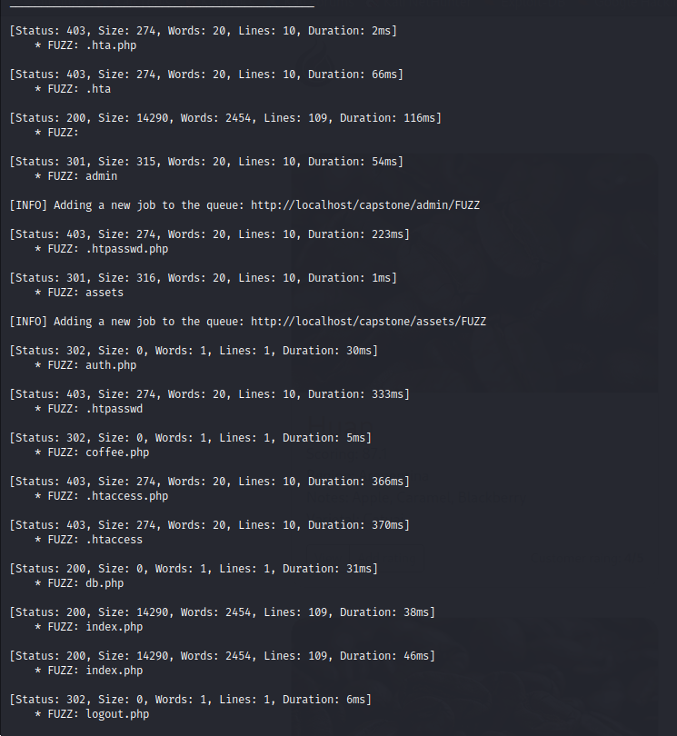

Will use FUZZ to see what's going on
ffuf -uhttp://localhost/capstone/FUZZ -w /usr/share/wordlists/dirb/common.txt -e .php -recursion

Gobuster:
┌──(kali㉿kali)-[~/Downloads/labs/web-capstone]
└─$ gobuster dir -u http://localhost/capstone -w /usr/share/wordlists/seclists/Discovery/Web-Content/raft-small-files.txt -x .php